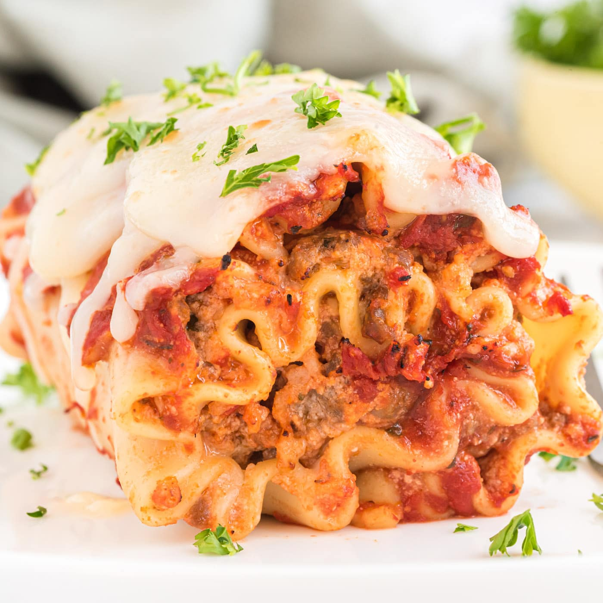

Lasagna Rolls

This is the BEST recipe for Lasagna Roll Ups! It's easy to make with
ground beef and sausage, ricotta cheese, Parmesan, and mozzarella!
Easy to follow recipe that brings so much to the table
when it comes to flavor, style, looks and most importantly taste!
This recipe has been in my family for decades, I love sharing it to keep
my families memory going no matter what home!
Ingredients
- 6 lasagna noodles
- 1 pound ground beef
- 1 jar (14 ounces)
- 1 teaspoon fennel seed, optional
- 2 cups shredded part-skim mozzarella cheese, divided
Steps
-
Cook lasagna noodles according to package directions. Meanwhile, in a
large skillet, cook beef over medium heat until no longer pink, breaking
it into crumbles; drain. Stir in spaghetti sauce and, if desired, fennel
seed; heat through.
-
Drain noodles. Spread 1/4 cup meat sauce over each noodle; sprinkle with
2 tablespoons cheese. Carefully roll up noodles and place seam side down
in an 8-in. square baking dish. Top with remaining sauce and cheese.
-
Bake, uncovered, at 400° for 10-15 minutes or until heated through and
cheese is melted.